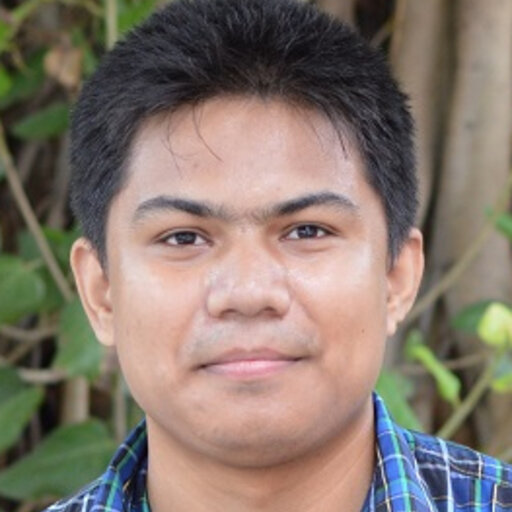

|  | Naval Kishore Mehta
IDDP Scholar | Senior Research Fellow
AcSIR, CSIR-Central Electronics Engineering Research Institute |
Introduction
- I am an Integrated Dual-Degree (M.Tech + Ph.D.) student at AcSIR, CSIR-CEERI, working in the Advanced Information Technologies Group (AITG) under the guidance of Dr. Sanjay Singh. My research focuses on human-computer interaction and video understanding, integrating deep learning with industrial applications in human activity monitoring, multimodal learning, and safety-critical system design.
- Before joining CSIR-CEERI, I worked as a Research Intern at IIT Bombay in the Physics and MEMS departments under the mentorship of Prof. Shiva Prasad and Prof. N. Venkataramani. I hold a Master's degree in Electronics Science from Kurukshetra University and a Bachelor's degree in Electronics (Hons.) from the University of Delhi.
Publications
- Neural Networks, 2024 - Present.
- IEEE Transactions on Neural Networks and Learning Systems, 2022 - Present.
- IEEE Transactions on Fuzzy Systems, 2022 - Present.
- Frontiers in Neuroscience, 2021 - Present.
- Neurocomputing, 2019 - Present.
- Scientific Data, 2019 - Present.
- Information Fusion, 2022 - 2023.
- IEEE Transactions on Fuzzy Systems, 2020 - 2021.
- IEEE Transactions on Industrial Informatics, 2020 - 2021.
- Conferences: AAMAS, AAAI, IJCAI, NeurIPS, IEEE-Fuzzy, ICONIP, PRICAI, AJCAI ...
- Journals: IEEE TPAMI, TNNLS, TFS, TKDE, TCYB, TSMC-S, TNSRE, JBHI ...
- Top 2% Global Scientist, Stanford University and Elsevier, 2022 – 2023.
- JSPS Invitation Fellow (short-term), Japan Society for the Promotion of Science, 2023.
- IEEE TNNLS Outstanding Associate Editor Award, IEEE Computational Intelligence Society, 2023.
- STEM Early-career Researcher (ECR) Award: University of South Australia, 2022.
- AInet Fellowship: DAAD [German Academic Exchange Service], 2022.
- Discovery Early Career Researcher Award (DECRA): Australian Research Council, 2022 – 2025.
- AI Chinese Young Scholar, Baidu, 2022.
- The Finalist of Tasmanian Young STEM Researcher: Tasmanian Government, 2020 – 2021.
- ACS Certified Professional (CP) Award: Australian Computer Society, 2020 – 2021.
- China-Australia Millennial Project Scholarship: China Australia Millennial Project, 2018.
- Best Student Paper Award: Centre for Artificial Intelligence, University of Technology Sydney, 2017.
- Post-PhD Thesis Scholarship: Faculty of Engineering IT, University of Technology Sydney, 2017.
- Publication Award: Faculty of Engineering IT, University of Technology Sydney, 2017.
- UTS President PhD Scholarship: University of Technology Sydney, 2015 – 2017.
- Songshan Lake PhD Scholarship: National Chiao Tung University and Dongguan Songshan Lake Admin., 2014 – 2017.
- Outstanding MS Graduate: Electronic Engineering, The Chinese University of Hong Kong, 2013.

|
Abeer Banerjee, Naval Kishore Mehta, Shyam S Prasad, Himanshu Kumar, Sumeet Saurav, Sanjay Singh International Joint Conference on Neural Networks (IJCNN), 2024 (Oral) Paper This project focuses on overcoming the challenges of gaze vector prediction in extremely low-light environments. By introducing a unique temporal event-encoding approach and designing a tailored neural network, it ensures precise spatial localization and consistent accuracy in gaze direction estimation. |
Services
Associate Editor:Program Committee Member/Reviewer: